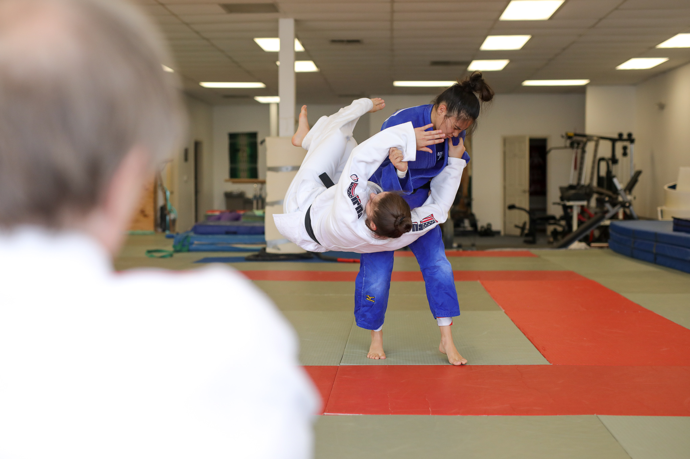
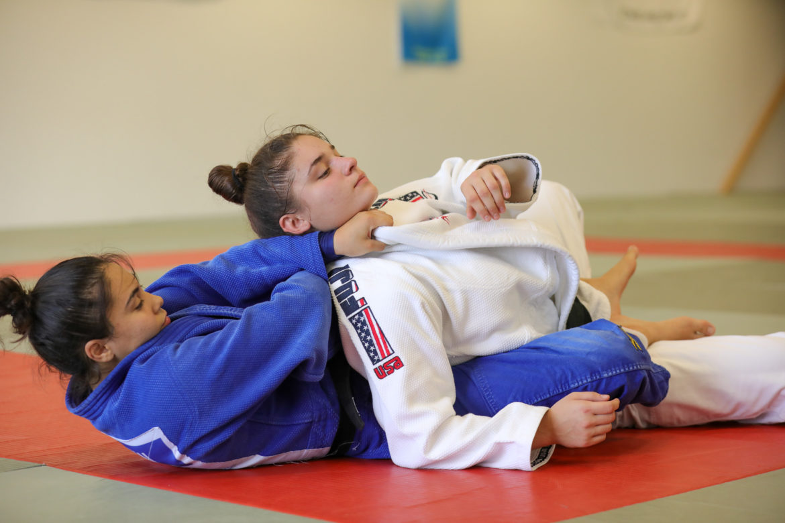

Story of the Month
Two San Antonio Judo Athletes Chase Dreams to World Championships in Tokyo

For Mariah Holguin, flying half a world away from her San Antonio home to stand toe-to-toe with a competitor who wants to put her on her back is nothing new. She turned 19 just two months ago and has been out of Johnson High School for a little more than
a year, yet, she has visited more than 20 countries while competing in judo. Holguin fell in love with judo a decade ago watching her brother participate in the sport. She has steadily risen through the ranks to become one of the
best U.S. judokas in her weight class. She and fellow San Antonio resident Nina Cutro-Kelly are in Tokyo this week to compete in the World Judo Championships.

“You can’t get any bigger than this and the Olympics,” Holguin said before departing for Tokyo. “So this is as close as I’m ever going to get to experiencing something like this outside of going to the Olympics. I’ve been dreaming about this for so long.
It didn’t actually hit me until about a week ago.” Despite rarely feeling butterflies before competitions, Holguin admitted this time was different. Facing the very best in the world is about as big as it gets for men and women
who toil for hours in this sport, often with friends and family able to watch only on streamed video over the internet. Judo is a modern martial art less than 150 years old. Opponents try to take each other to the ground and force
the opponent to their back for as long as possible. Judokas also attempt to win through submission holds in matches that last 5 minutes.
Judo has been an Olympic sport for men since 1964; women began competing in the 1992 Olympics. Going into the world championships, Holguin ranks 68th in the world in her division in the International Judo Federation rankings. Two other Americans are ranked
slightly higher but both are significantly older. Meanwhile, 34-year-old Cutro-Kelly is one of the oldest women competing in her division and is the highest-ranked American at No. 28 in the world. The fact that the World Championships
are being held in Japan is significant to both San Antonio competitors, because it’s the birthplace of the sport. Holguin and Cutro-Kelly were scheduled to practice this week in the building this week in which judo is said to have
originated. “I love it,” Cutro-Kelly said. “I can’t imagine any other life.” Cutro-Kelly has been competing in judo for nearly three decades. She started as a girl growing up in New York and continued in the sport while living
in France. She is a a nine-time U.S. national champion who is making her eighth trip to the world championships, but injuries have held her back at various points in her career. Still, she has her sights set on making the 2020
Olympic team.
“It would be the final bit of unfinished business before I retire,” Cutro-Kelly said. “The only real reason I’m sticking around is I want to make the Olympic team.” Cutro-Kelly competes in the heavyweight division, although at 220 pounds she often is
40 or even 60 pounds lighter than many of her competitors. She uses her athleticism and agility to her advantage against bigger, slower opponents. Holguin competes in the 57-kilogram division, which is for women who are approximately
125 pounds. Winning a championship this week would mean conquering seven or eight opponents in a marathon day of fighting. Each weight division is decided beginning to end in one day. Holguin and Cutro-Kelly train under former
U.S. Olympic coach Jim Hrbek at Universal Judo on the North Side. Cutro-Kelly also teaches there when she’s not using her master’s degree to teach foreign languages remotely. “Balancing all of it is like trying to pull off a hat
trick, but I’m hoping it’s all going to pay off,” Cutro-Kelly said. Compared to Cutro-Kelly, Holguin is just getting started, even though her passport would suggest otherwise. “Judo has made me see so many other parts of the world
that I would never have got to see otherwise this early in my life,” Holguin said. “… I feel like it made me humble. You see so many other places that aren’t as well off as I am, and it made me appreciate what I have.” That includes
having the support of Cutro-Kelly, who even stepped in once to help her get treatment for a cut near her eye so she could compete the next day. “I think we really push each other,” Cutro-Kelly said of her relationship and friendship
with Holguin. “It’s a positive environment. A lot of clubs can suffer from being cliquey and, you know, it’s not a productive working environment. Mariah is 15 years younger than me, but we work together.”